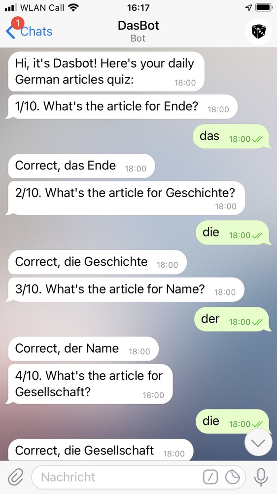

Say hallo to Dasbot!
Its mission is to help you learn German articles.
It will send you a short quiz in Telegram every day. By using it you will learn the genders of 2000 most frequently used German nouns.
You can change the preferred daily quiz time and length. To unsubscribe from the quiz, turn it off in the settings or just block the bot.
If you notice a bug, or have an improvement suggestion, please send me a message or an e-mail.
Get it here
